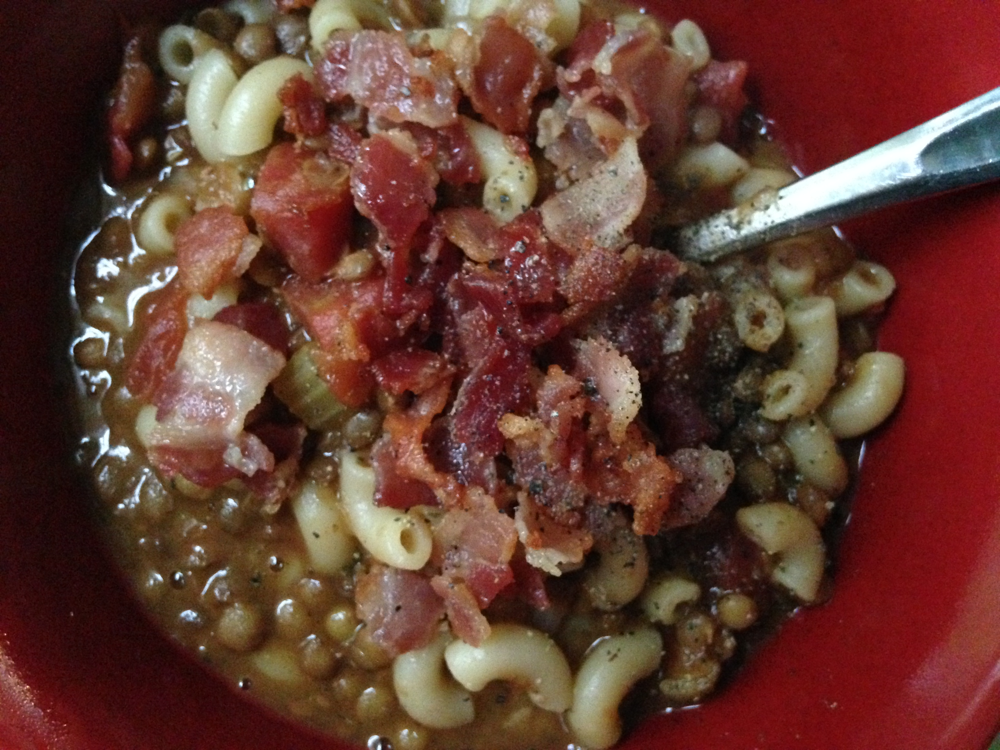

Lentil Soup

Description
This is our favourite lentil and bacon soup recipe. Taken from The Essentials of Classic Italian Cooking.
Ingredients
- Extra-virgin olive oil
- 115g bacon, very finely chopped
- 8 tablespoons chopped onion
- 2 teaspoons chopped garlic
- 6 tablespoons chopped celery
- 2 tablespoons chopped parsley
- Salt
- 6 tablespoons tinned Italian tomatoes
- 225g lentils
- Freshly ground black pepper
- 170g short tubular soup pasta
- 4 tablespoons freshly grated romano cheese
Steps
- Choose a soup pot that can subsequently contain the lentils and pasta with sufficient water to cook them. Put in 2 tablespoons olive oil, the chopped bacon, onion, garlic celery and parsley, and turn the heat to medium. Cook, stirring and turning over the ingredients regularly, until the vegetables become deeply coloured, about 15 minutes. Add the chopped tomato, stir to coat well, and cook for a few minutes until the fat floats free of the tomato.
- Add the lentils, turning them over 3 or 4 times to coat them well, then add enough water to cover by 2.5 cm. Adjust the heat so that the liquid simmers gently, and cook until the lentils are tender, about 25-30 minutes. Whenever the water falls below the 2.5cm level above the lentils, replenish with as much water as needed.
- Add salt and several grindings of pepper, put in the pasta and turn up the heat to cook at a brisk boil. Add more water if necessary. When the pasta is done-it should be tender, but firm to the bite-the consistency of the soup should be more on the dense that on the thin side.
- Taste and correct for salt and pepper. Add the grated cheese, about 1 tablespoon of olive oil, stir thoroughly, then take off heat and serve at once.